What Strażnik is
A server collects data from several public sources, calculates a score for every province and sends notifications. The app shows the map, the source of every point and the last 12 hours of history. You need neither an account nor your own server.
The score is an app indicator, not a probability of impact. No single article or zone raises the level on its own — the threshold is reached only by an official message, a serious object close to the border, or several independent sources at once.
1. Installation and updates
- Open Strażnik on the App Store or search the App Store for “Strażnik alarm powietrzny”. The app is available on the App Store in Poland, Germany, the United Kingdom, Belgium, Lithuania, Latvia, Estonia and Ukraine.
- Tap Get and confirm as with any other app. Strażnik is free and has no in-app purchases.
- On first launch, allow notifications — without them an alert cannot reach you while the app is closed.
- Save your province in Menu → Settings → My places and tick Watch alerts for this province.
- Go through the four steps in the “Check your iPhone” box in chapter 9 — they decide whether you hear an alert at night.
Updates
On iPhone, updates come through the App Store, as for any app — Strażnik does not download files itself and has no “Check for updates” button. If automatic updates are off, open the App Store → your account (icon at the top) → the list of updates. The iPhone version number can differ from Android: every release goes through Apple's review, so it sometimes arrives later.
Test build (TestFlight)
If you tested Strażnik through TestFlight, you do not need to uninstall anything: get it from the App Store and the store version replaces the test build. Settings and My places stay. After installing, open the app once and check that your province is still selected for alerts.
2. First steps: My places, notifications, language
My places
Menu → Settings → My places → Open My places. You can save up to 8 places, e.g. Home, Work, Trip. For each you choose a province and tick Watch alerts for this province. Notifications arrive for watched provinces; several places in one province make one subscription. The first place defines “my region” on the map.
A place can also be exact: tapping ◎ Read location once stores a one-off point and its accuracy. There is no background tracking. While the app is open, Strażnik then calculates on the phone the distance to visible objects. Notifications are still sent per province.
Place data stays on the device — the button is called Save on device.

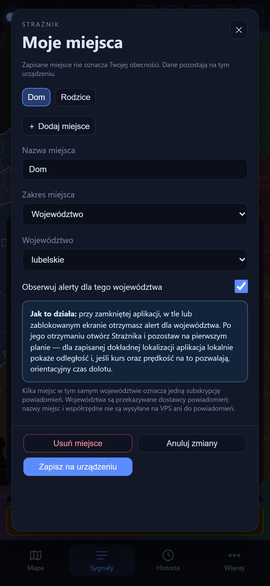
iPhone permissions
On first launch Strażnik asks only for permission to send notifications. There is no full-screen alert permission and no battery setting on iPhone — iOS does not offer them to ordinary apps. In Menu → Settings → Alerts and permissions you can check whether notifications are ready and for which region; the Notification settings button opens Strażnik's settings in iOS. If “Time Sensitive Notifications” are off, the tab shows a warning — without them a red alert may not break through a Focus mode.
If you only want to watch the map, turn off Alerts on this phone — the phone is unsubscribed from every province and stops receiving alert notifications. iOS permissions stay as they are — the app cannot change them; you switch them off in the iPhone's Settings.
Polski / English
Menu → Settings → Language, text and version → Interface language. After choosing, tap Change language and restart — the app restarts in the new language. Until you choose one, the app follows the phone language: Polish and Ukrainian as they are, any other language — English. The English version covers the interface, object descriptions and map labels; quoted messages and article titles stay in the original language.
Text size
Menu → Settings → Language, text and version → Text size: Normal, Larger or Largest. It applies at once, with no saving and no restart. Every piece of text grows together — the panel, the object cards, the legend, the alert screen and the GROTA module. Spacing and buttons keep their size, so the layout holds and nothing runs off the screen.
On Android this setting multiplies with the system font size (Settings → Display → Font size), so with a large system font “Normal” is usually enough. Labels on the map itself come from the map server and this setting does not change them. On the website ordinary browser zoom (Ctrl and +) works as well. On iPhone it is the other way round: the system text size (Settings → Display & Brightness → Text Size) does not change the text in Strażnik — the system web view follows Dynamic Type only when a page explicitly asks for it, and ours does not. On iPhone this setting is therefore the only way to get larger text.
3. The main screen
The layout has five areas: the bar at the top with the source indicators and the counter, the (i) sign in the top-left corner of the map, the tiles along the right edge of the map, the my region banner and the floating bottom bar.
| Element | What it does |
|---|---|
| STRAŻNIK and six indicators | The indicators are sources: NEPTUN, UA alerts, ADS-B, RSS, RCB/RSO, PAŻP. Green — the source responds; red — it does not. The RCB/RSO indicator shows the Regional Warning System that carries official RCB alerts; it is green only when RSO has responded in the last few minutes. Tapping the indicators opens the source descriptions; tapping the name opens “About”. A green indicator means a working source, not the absence of a threat. |
| Drone and missile counter | How many drones (including Shaheds and reconnaissance drones) and how many missiles (cruise, ballistic and KAB glide bombs) are on the map right now — exactly as many as there are icons. FPV, MiG-31K and unidentified objects are not counted; zero is dimmed. The number can suddenly drop by half: the source removes objects in whole batches a few minutes after their last confirmation, so a drop does not have to mean the attack is over. Tapping it opens an explanation. The counter is not a warning for a province — points and notifications are. In History it shows the moment chosen with the slider. |
| (i) sign on the map | The Map sources box: where the objects come from (NEPTUN, ADS-B) and the base map (OpenFreeMap © OpenMapTiles © OpenStreetMap). At start it opens by itself and folds away after a few seconds or when you touch the map. |
| my region | Frames the map on the first saved place. |
| zones | Turns the PAŻP zone layer on and off. A dimmed tile means the layer is off. |
| whole PL | Shows Poland together with Ukraine. |
| Banner above the bottom bar | Your region, its level and points, e.g. “Lubelskie — below threshold 1.1 pts”. Tapping it opens the province card. |
| Bottom bar: Map Signals GROTA History Menu | Map returns to the main view; Signals opens the panel; GROTA — nearest places of shelter (in the app, chapter 9); History scrolls through 12 hours; Menu opens the list below. |
| Menu | Settings (Alerts and permissions, My places, Sound, Map, Language, text and version), Notifications (in the app — turning them on or muting them; on the website — browser notifications, chapter 10), Legend of symbols and colours, 3D view (the height of a province block grows with its points — also below the threshold), Foreign aircraft (RU/BY) (chapter 8), About and scoring, User guide. There is no link to support the author on iPhone — App Store rules do not allow it in the app. |
Settings open with a readiness card — whether an alert will reach you and what is still missing — with the five sections below it. Most changes are saved immediately, without “Save” and “Cancel” buttons; only the language and the address of your own server need a restart, with a button in their section, and the My places editor has its own Save on device button. Every window opened from the Menu — Settings, About, Foreign aircraft, Legend — has a ‹ Menu button at the top, next to “Close”, that takes you back to the Menu. Settings sections and the My places window have ‹ Settings at the top.
At start a bar “UNOFFICIAL additional source…” appears at the bottom. You can close it with the cross — it comes back during an alert. Close panels and windows with the cross, the Map tab or a tap beside them. When you open the Signals panel or the history, the map moves up over the uncovered part of the screen and goes back when you close it. iPhone has no back button — go back with the cross or the Map tab.

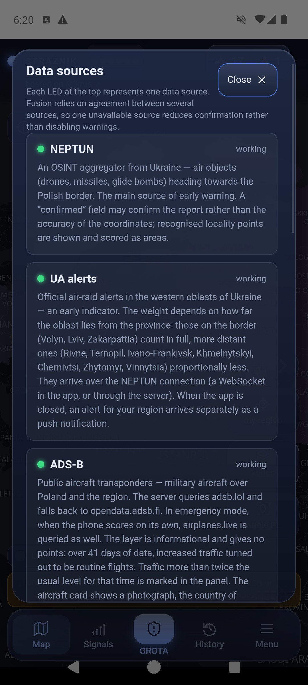
4. The map, objects and aircraft
Drag the map with a finger, zoom with two fingers and tap objects. A province's colour shows its points from the last 60 minutes:
| Colour | Meaning |
|---|---|
| navy | 0–1.9 pts — calm (below threshold) |
| yellow | from 2 pts — elevated attention |
| red | from 4 pts and a confirmation — high priority (chapter 11) |
| dimmed, olive | colour from neighbouring provinces only; the card has a dashed border and says “raised by neighbours · no alert here”. Such a colour sends no notification. |
NEPTUN objects over Ukraine have distinct shapes — the legend shows each one:
| Object | Symbol |
|---|---|
| Drone / UAV | yellow silhouette with straight wings and a notched tail; a red nose and a red arrowhead ahead of it show the direction of flight |
| Shahed drone | orange delta wing |
| FPV drone | four rotors; local, no points |
| Reconnaissance drone | white-grey silhouette with long wings |
| Cruise missile | red body with wings |
| Ballistic missile | slim pink tip |
| KAB guided bomb | yellow bomb silhouette |
| MiG-31K (carrier) | purple aircraft |
| Unidentified object | grey diamond with a question mark |
Unknown heading: the icon is not rotated and has a dashed white ring and a question mark — it does not indicate a direction. Only objects that currently add points to a province get a pulsing red ring; the others stay still.
A pink-highlighted Ukrainian oblast with a dashed outline has an air-raid alert that currently adds points to a province. Nearer oblasts are clearer, distant ones barely visible. Tapping the oblast shows when the signal arrived and how many points it gives to which province.
The circle around an object shows where the object may be — not a blast radius. It combines the uncertainty of the report itself with the distance the object could have flown since the last report, so it grows until a new report arrives — for at most 15 minutes, after which it stops growing and the object card says so. The card splits the number into both parts. Missiles, glide bombs and ballistic objects keep a fixed area, because the source gives them no heading. The dashed line is the flight path — drawn only when the source gives positions suitable for tracking. In Menu → Settings → Map → “Object tracks” you choose separately for drones and missiles and for aircraft: off, flown track or track and heading (a line covering 30 minutes of drone or missile flight, 15 minutes for aircraft, with dots every 5 minutes). The heading of drones and missiles is drawn only for a heading measured from the object's movement. An object with an approximate position (large uncertainty circle) has neither a track nor a heading — and most NEPTUN objects stay put between reports, so lines appear only for some of them. Blue aircraft and helicopters are military aviation with a public ADS-B transponder. The circle grows the same way in the history view — from the age of the report at the chosen moment.
The time under an icon (for example “7 min”) is the age of the last report about that object. NEPTUN collects human reports, not radar returns: an object stays where it was until someone reports it again, and sometimes no further report arrives. The label appears after five minutes and the icon fades gradually — the paler it is, the older the information. After an hour the icon is clearly faded. Motionless icons therefore mean no new reports, not a frozen map. The object card shows a last report line, and past a quarter of an hour it adds that the object may have moved on since.
The legend opens from the first icon at the top and closes with the ✕ Close button in its header. Its six groups expand one at a time — you see every group name at once, so finding one symbol takes no scrolling.

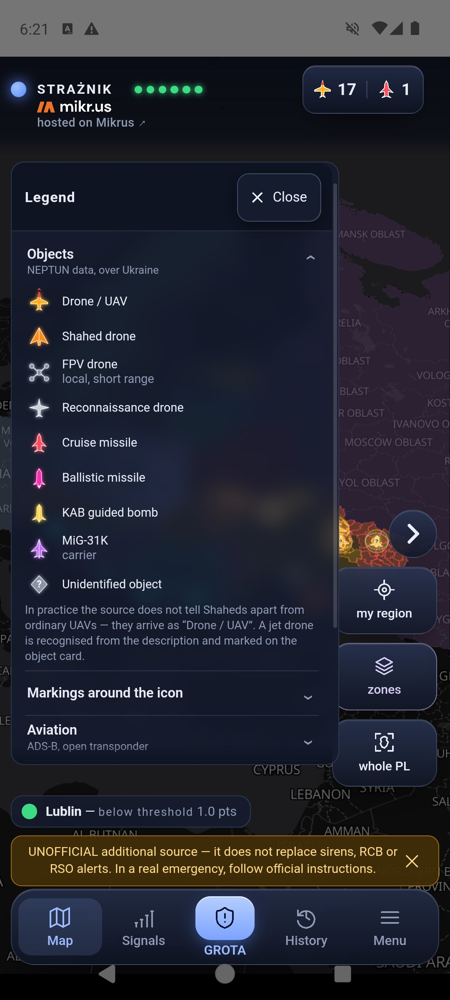
Object and aircraft cards
Tapping an object opens a mini card in the bottom-left corner and puts a white ring around the object on the map. The arrow button (Expand card) enlarges it to most of the screen and collapses it again; the cross closes it.
A drone or missile card shows the type, reported area, number of confirmations, confidence, the area where it may be, heading and distance from the Polish border. Time to arrival (ETA) appears only for positions suitable for such a calculation. When the source marks the position as a report area, the card says “approximate report area — no confirmed route or arrival time” and the distance is an estimate. When the source derived the position from the name of a target and a heading, the card says “heading to a target: …” and adds that the extended track points towards Poland — this does not mean the object is flying at Poland. A heading towards Poland that misses the nearest part of the border by more than 50° is described as “towards a farther part of the border”. Object illustrations are AI-generated references and must not be used to identify a model.
An aircraft or helicopter card shows the callsign, registration, country, model, role, altitude, speed and heading. The photo shows an example aircraft of that model — the author, source and licence are below it. 📍 follow track draws the flight trail. The signal row says where the position came from: ADS-B is reported by the aircraft itself, while MLAT is computed by ground receivers from signal time differences — outside their coverage, over Belarus for example, it can be tens of kilometres off, and the card says so. Altitude, speed and heading come from the aircraft in both cases. When a report would require an impossible jump — the aircraft could not cover that distance in that time — Strażnik does not move the icon: it stays at the last credible position, the leg is not added to the trail, and the card says so. The map does not show aircraft with the transponder switched off.

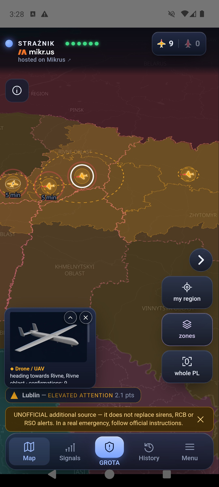

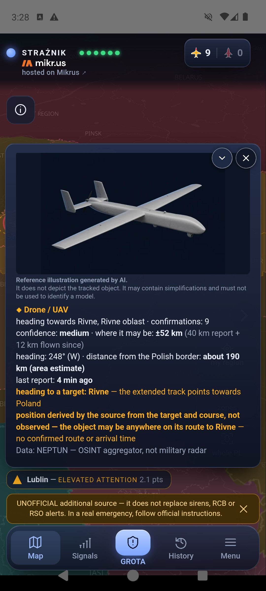

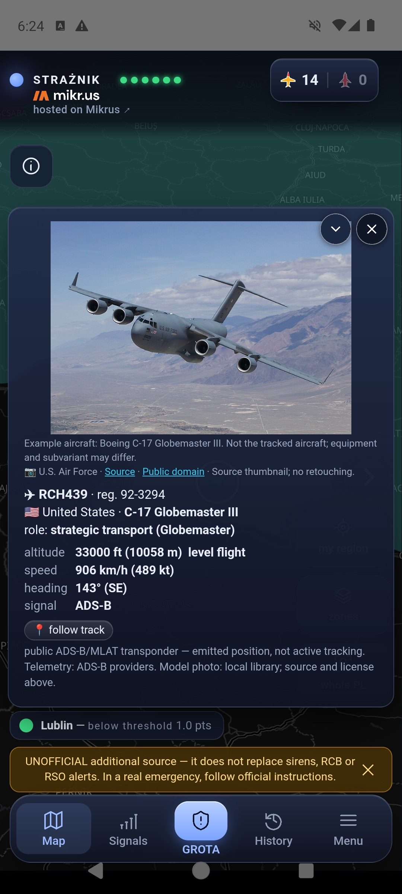
5. PAŻP zones on the map
The zones tile shows active airspace zones from the daily plan of the Polish Air Navigation Services Agency (PAŻP). A zone that has been standing for a long time, or was already active when watching started, has a quiet purple outline. A zone switched on recently, while Strażnik was watching, is yellow and has a 3D block.
Tapping a zone opens its description: the type and what it means, since when Strażnik has seen it, reserved until (the end of today's slot in the daily plan — a zone can be renewed) and the altitude band. The button with the province name leads to its card, because a province fully covered by a zone is hard to tap on the map.
Overlapping zones: a tap opens the smallest zone under your finger, and the others at that spot are listed as “Other zones at this spot” buttons.
The zone layer itself adds no points. Only a rare D, R, NPZ or ADHOC zone scores — the rules are in the zone scoring section.

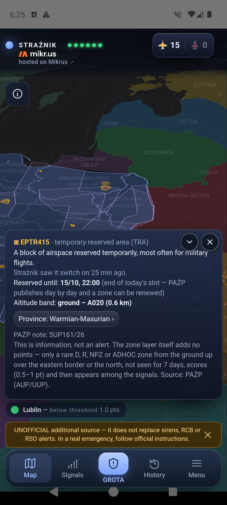

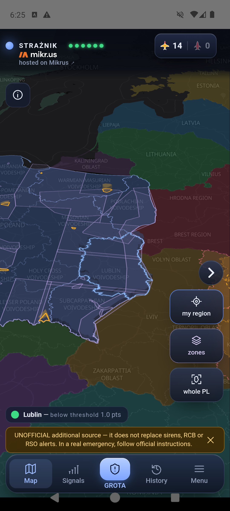

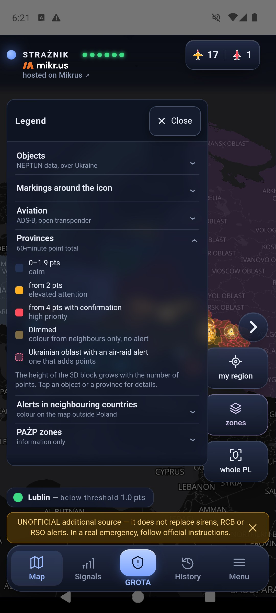
6. The signals panel
The Signals tab opens the province cards. Your region comes first and is labelled “my region”. Each card shows the points, the level, an “adds up to” summary (e.g. “0.9 ALARM UA”) and the PAŻP zones over the province. Tapping a card expands its list of signals, and tapping again collapses it — the same in history mode.
Each signal row shows the source, its contribution in points, the title (an article opens as a link), the signal's age and its weight. A signal keeps full weight for 30 minutes and then loses it until zero at 60 minutes — the “weight 64%” note means exactly that. A struck-through number is the nominal value that was not counted because the signal is fading or the source class has reached its cap. The numbers in the summary are rounded one by one, so their sum may differ from the score by 0.1.
A signal without points stays visible with an explanation:
- Repeated official alert — an article that only talks about an RCB alert (names RCB, “alert for…”, quotes the alert) when an RCB or RSO alert for any province arrived up to 4 hours earlier. An article with information beyond the alert keeps its points: a drone over Poland, an airspace violation, an explosion, debris, sirens, a search. An article about the end of the threat (“no threat”) also scores nothing (since 1.7.99).
- Historical report / aftermath — an anniversary, a trial, rebuilding.
- Cancelled by RCB and After RCB cancellation — an alert RCB cancelled, and articles about it.
- The RCB alert has not been cancelled yet — an RCB alert stands until it is cancelled, and the cancellation can come hours later. Our own signals expire long before that and the map looks calm, so this entry says plainly that the alert is officially still in force. It disappears when the alert is cancelled, when its RSO entry expires (RCB often ends an alert this way, without a separate cancellation) or after twelve hours.
- Report on an earlier event — the server read the article and it describes something more than an hour old.
- Article could not be read — no points — the text could not be fetched; the link stays.
A NEIGHBOURS entry is points spilling over from a neighbouring province (chapter 11).

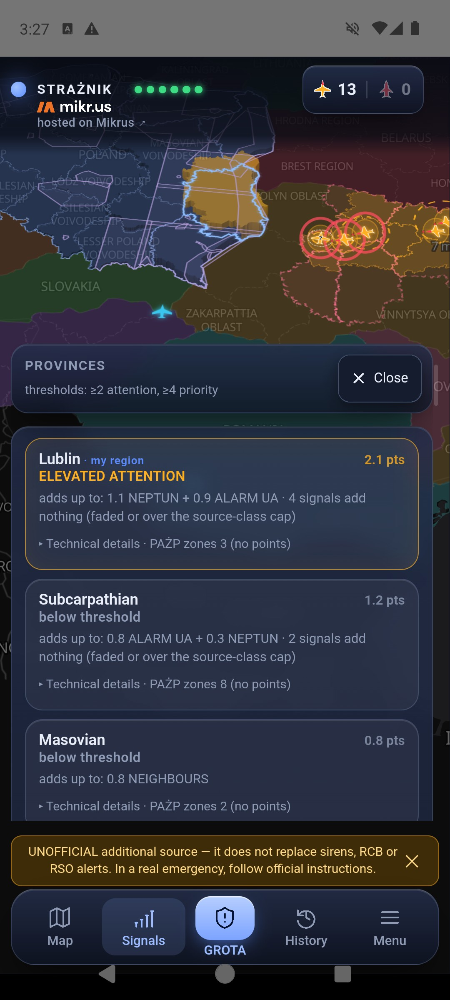
Further down the panel has two observation lists without points: Objects ≤ 250 km from the border (NEPTUN) and Military aviation (ADS-B) over eastern Poland. This is public transponder data, not tracking of hostile aircraft. It comes from free, open aggregators: the server queries adsb.lol and falls back to opendata.adsb.fi; in emergency mode, when the phone scores on its own, airplanes.live is queried as well. The layer is informational and gives no points. Where available, the province card also offers Cameras in the region — road cameras, not a tool for detecting airborne objects. Since 1.7.88 this is a plain list with links: the preview is not shown here, because the worldcam.pl terms do not allow it. Tapping a tile opens the camera at the source.

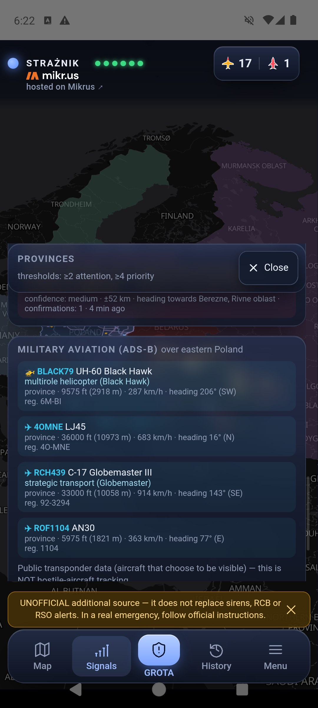

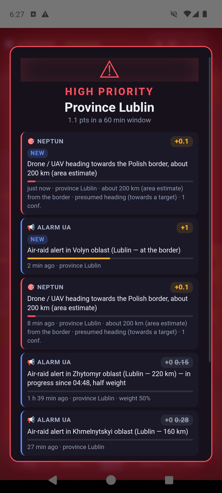
7. 12-hour history
The History tab opens the history view. The slider track is coloured by the level at each moment, so you can see at a glance when something happened. Drag the handle: the map, colours, objects and aircraft show the chosen moment, and the label gives the time and the number of minutes back. Below the slider are the highest-scoring province at that moment, the number of drones, missiles and aircraft in the snapshot, and a “N signals in the window” link that opens the panel for that moment.
The 12-hour chart (from 1.7.95) sits above the slider on the same time axis: the number of drones as a 30-minute average over the raw bars, and missiles and KAB bombs as red dots at the bottom. By default it is collapsed to a single row with the maximum — tap it to expand; the app remembers your choice. Next to the slider mark you see the average for that moment, and tapping the chart moves the slider there. The chart counts the same as the counter in the top bar, so drops usually mean the source removed a batch of objects, not that the attack is over.
Below the slider is a row of buttons: −12 h (start), alert back (start of the previous alert), −10 and −1 minutes, ▶ play and pause, +1 and +10 minutes, alert forward (next alert) and end (latest snapshot). Holding ±1 and ±10 keeps scrolling. On a narrow screen or with large text the labels under the buttons are hidden and only the icons remain. ×1 in the header switches playback speed to ×2 and ×4.
In history mode the panel is headed HISTORY VIEW, and signal times count from the chosen moment (“36 min earlier”). LIVE in the bar header, or the Map tab restores the current view.
History is downloaded to the device once and scrolling runs locally, without a server request for every finger movement. Snapshots are usually taken every minute — this replays stored samples, not a continuous recording.

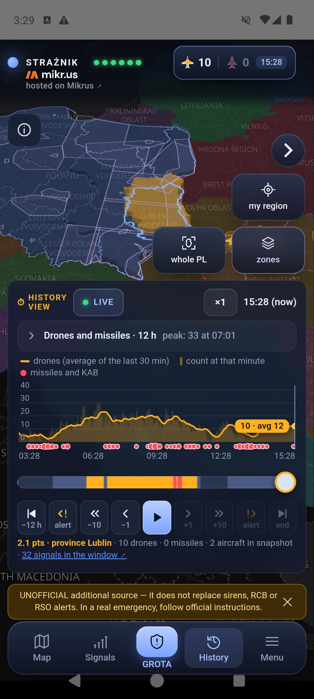

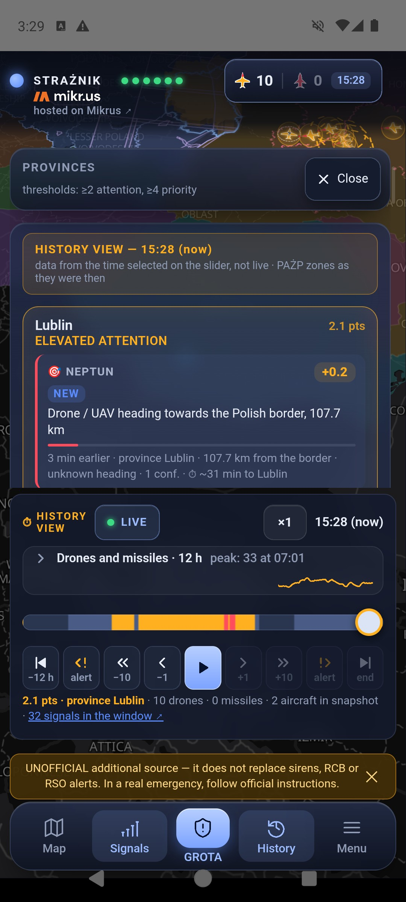
8. Foreign aircraft over the eastern flank
The aircraft icon at the top opens a list of military aircraft with Russian or Belarusian registration visible in public ADS-B/MLAT data over the eastern flank. The panel has two parts: currently in range and a log — entered / disappeared from range covering the last 12 hours, including time when the app was closed.
In history mode the panel follows the chosen moment. A dimmed aircraft on the map is its last recorded position from at most 2.5 minutes earlier. “Disappeared” means the signal was lost in the data, not a landing or a shoot-down. These observations add no points, and an empty list does not mean empty skies — many aircraft fly with the transponder off.

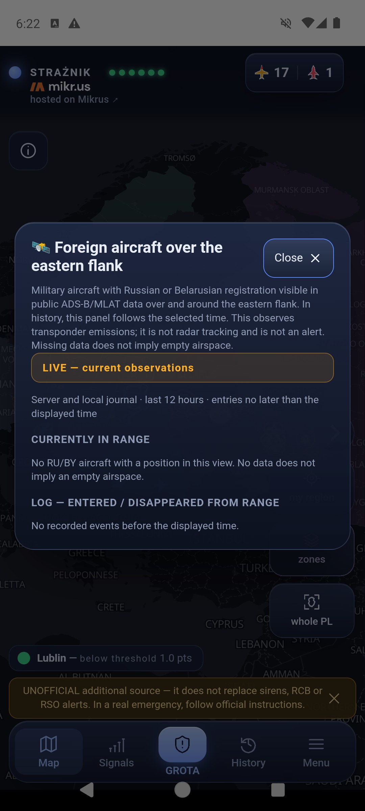
9. Alerts and notifications
| Level | What happens on iPhone |
|---|---|
| below 2 pts | Shown on the map and in the panel, no notification. |
| yellow, from 2 pts — ELEVATED ATTENTION | An ordinary notification with a short attention tone. It respects the silenced ringer and Focus modes. |
| red, from 4 pts and with a confirmation — HIGH PRIORITY | A notification marked “Urgent” (Time Sensitive): it appears on the lock screen and plays the siren once, with vibration. It breaks through a Focus mode if you allow it (box below). It does not take over the full screen and does not loop the siren — iOS does not allow ordinary apps to do that. Tapping the notification opens Strażnik on the alert screen. |
Alerts arrive in Polish. The notification text — the title, what to do and the reasons — is written by the server in Polish, whatever language you choose in the app. The level and the province name are easy to recognise, and the details are in the app in your language.
How iPhone differs from Android
- No full screen. On Android a red alert wakes the screen and covers the lock screen. On iPhone it is a prominent notification on the lock screen.
- The siren plays once. On Android it loops until you confirm. On iPhone it plays once with the notification. It loops only while the app is open on screen; silence it then with ACKNOWLEDGE — silence alert.
- Silenced ringer = silence. When the switch on the side of the phone (or the Action button) is set to silent, the alert is silent — you get the banner and the vibration (unless Settings → Sounds & Haptics → Haptics is set to “Don’t Play in Silent Mode”). Only so-called Critical Alerts can break through silent mode, and Apple grants them separately. Apple has granted Strażnik this permission: once you turn on Turn on alert despite silent mode in settings, a red alert sounds even on a muted phone (yellow stays quiet). From version 1.7.94 the red test alert works the same way; without the permission the app warns before the test that it will be silent on a muted phone. We checked this on a tester's phone in October 2026: the siren sounded with the ringer silenced, and iOS added its critical-alert label above the notification — that label tells you the permission works. The same check showed that the Sounds switch in Strażnik's notification settings does not silence the red critical alert — only turning off Critical Alerts on the same screen does (the notification then arrives without sound).
- No alert-volume slider. The siren plays at the iPhone's ringer and alerts volume, and the app cannot raise it (on Android we raise the alarm volume ourselves). With the ringer turned down, the siren is quiet. Set the slider in Settings → Sounds & Haptics → “Ringtone and Alerts” and turn off “Change with Buttons” there — then the side buttons change only media volume, not the ringer by accident. Only Critical Alerts get their own volume independent of the slider — Apple has granted them to Strażnik; they work once you turn on Turn on alert despite silent mode.
- Focus and Sleep. iOS needs a separate permission for “Time Sensitive Notifications” — for the app and for each Focus mode. Without it the alert waits until you unlock the phone.

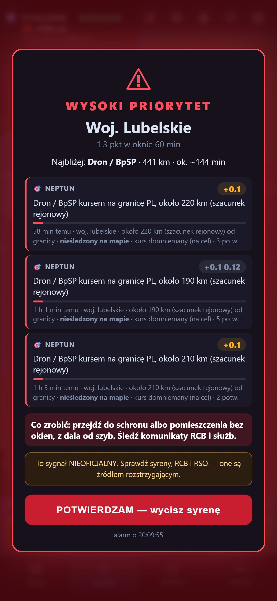
- Ringer on and loud — the side switch is not on silent and the “Ringtone and Alerts” slider (Settings → Sounds & Haptics) is high; the siren plays at that volume. If you sometimes silence the phone, set Settings → Sounds & Haptics → Haptics → “Always Play” (or “Play in Silent Mode”) — then a silenced iPhone at least vibrates.
- Notifications allowed: Settings → Notifications → Strażnik → “Allow Notifications”.
- “Time Sensitive Notifications” on — in the same place.
- Strażnik allowed in Sleep: Settings → Focus → Sleep → Apps → add Strażnik. If you use other Focus modes (e.g. Work), allow it there too.
- Wearing an Apple Watch? Check Settings → Notifications → Strażnik → Forwarding. When the watch is on your wrist and unlocked while the iPhone is locked, the alert goes to the watch and the phone stays silent — that is how iOS works and no app can override it. Either turn forwarding off here (the alert then always sounds on the phone), or leave it on and make sure the watch itself is not silenced and its haptics are prominent (Watch → Sounds & Haptics).
Where to shelter — GROTA
After you tap ACKNOWLEDGE — silence alert the alert screen shows three buttons: Where to shelter, Watch the map and I'm in a safe place. Strażnik never switches the screen on its own — you choose. Where to shelter opens the GROTA module straight on its NOW tab: the nearest shelter places from the public register of Poland’s State Fire Service, with the distance and a route. Outside an alert, open it with the GROTA button in the middle of the bottom bar.
The first time, the iPhone asks for location access — choose “While Using the App”. GROTA works without it too: you point out the place yourself (a saved place, an address or a point on the map). The register and the nearest-place search work offline; a road route needs the network or a package downloaded earlier in the Przygotuj (prepare) tab. GROTA speaks English, Ukrainian and Polish — pick the language in its Zasady (rules) tab.
When the phone sounds and when it does not
- A notification arrives only for watched provinces from My places.
- The province needs at least 1 pt of its own signals. A colour coming only from neighbours does not sound.
- Spill-over from neighbours can close the threshold by at most one step: own points below yellow plus a neighbour give at most yellow.
- No repeats: if the score drops and crosses the same threshold again within 60 minutes of a notification, only the map changes. Exception: a new RCB/RSO alert. Moving up a level, from yellow to red, always notifies.
- In the open app sound follows the same rules as the notification, not the map colour — for every watched province.
- A notification that arrives more than 10 minutes late (e.g. after coverage returns) is shown silently, marked “delayed by … min”.
Sound tests
Menu → Settings → Sound has ▶ Test: attention, ▶ Test: siren and ▶ Test: full alert — they play in the app window. Below are ▶ Test: red native (in 5 s) and ▶ Test: yellow native (in 5 s): after 5 seconds a real iPhone notification arrives with the siren or the attention tone. Lock the screen in the meantime to see how the alert looks on the lock screen — and whether you hear it with your ringer and Focus settings. If notifications are blocked, the app tells you at once. No test checks the notification path from the server.
How it works technically: the server sends a notification through Firebase and Apple's push service (APNs) for every watched province — also with the app closed and the screen locked. Strażnik does not run in the background on iPhone and does not poll sources itself; everything that arrives with the app closed is a server notification. Fallback mode: when the server does not respond, the open app starts its built-in engine and polls the sources itself, checking every minute for the server to return. Fallback mode works only with the app open — with the app closed and no server, no alert arrives.
10. The website and browser notifications
The same map runs at straznik.eu. At the top there are also app download buttons (for Android and iOS), User guide and Buy a coffee. The browser tab shows the Strażnik icon.
Browser notifications: first save a province in Menu → Settings → My places, then open Menu → Notifications and allow notifications. They arrive also with the tab closed — one per alert, without a continuous siren. The continuous siren with vibration plays only in an open tab at the red level. On iPhone the site's notifications work only after adding it to the Home Screen (Safari → Share → “Add to Home Screen”) — it is simpler to install the App Store app, which also gives the “Urgent” notification with the siren.
Turning them off: open Menu → Notifications (or Menu → Settings → Alerts and permissions) and choose Turn off notifications in this browser. Strażnik then removes the subscription on the server and in the browser. The browser permission itself is removed in the browser settings — the message gives the path for your browser, for example:
In any browser: open its Settings, type “site settings” (or “site”) in the search field → Permissions → find straznik.eu → Notifications → Block.
Chrome on Android: ⋮ → Settings → Site settings → Notifications → straznik.eu → Block.
11. Where the points come from
Points count over a 60-minute window. For the first 30 minutes a signal keeps full weight, then loses it linearly to zero. Every source class has a cap, so many articles or oblast alerts about the same thing do not add up without limit. A repeated observation of the same NEPTUN object is not counted as a new object.
| Source | What is taken into account | Points / cap |
|---|---|---|
| NEPTUN — objects | Type, number of objects, distance from the border, heading, confidence, number of confirmations, observation state and position quality. Report area ×0.6, recognised locality centre ×0.5. | up to 8 in total |
| RCB / RSO | An Alert RCB about an airborne threat published in RSO. It counts for 60 minutes from detection, regardless of the entry's validity date. A cancellation in RSO zeroes the alert at once. Since 17.09.2026 RCB sends three kinds of message and they weigh accordingly: “the situation is being monitored” 1.5; “a massive attack is under way… react to alarm signals” 3; “threat of an air attack, find a safe place” 4.5. A later alert does not add to the earlier one: the current one counts, and the surplus of a stronger one fades within 10 minutes. Since 24.09.2026 the text of the day's message on gov.pl/rcb is read as well: RSO sometimes carries only part of the alert's recipients (podkarpackie was lost on 17.09 and 24.09), so the missing provinces are taken from that page — the same way when the app scores on its own, without the server. An article on gov.pl about an alert that RSO has already cancelled scores nothing. | 1.5 / 3 / 4.5, cap 4.5 |
| Ukrainian oblast alerts | An air-raid alert in a western Ukrainian oblast; the weight falls with distance (table below). Full weight for the first 30 minutes of the alert, then half while it lasts; the end of the alert zeroes the points at once. | up to 1, cap 1 |
| Media (RSS) | Airborne object plus event: 0.5 pt; an unambiguous operational report (sirens, alert, scrambled aircraft, interception): 1 pt. The server reads the whole article: a report on an earlier event or an unreadable article scores 0. Exercises, anniversaries, court cases and restated RCB alerts also score 0. | 0 / 0.5 / 1, cap 1 |
| ADS-B | At least 3 military aircraft and more than twice the usual traffic at that time of day (7-day baseline). Since 13 Sep 2026 informational only: over 41 days of data, increased traffic was routine flights. | 0 |
| PAŻP zones | Only rare D, R, NPZ, ADHOC zones from the ground up over the east or the north (below). | 0.5 (north 1), cap 1 |
| Baltic media | An airborne incident (airspace violation, shoot-down) in Lithuania, Latvia or Estonia: 0.5 pt. An announced air-raid alert for the public there is a trace in the panel: Lithuania 0.3, Latvia 0.18, Estonia 0.12. Feeds: LRT and 15min, LSM, ERR. A cancellation clears the contribution. A headline that still announces an alert (e.g. narrowed to a smaller region) is not a cancellation; an article published before the cancellation does not reopen the alert, and a report about alerts in other countries is not an alert in the outlet's own country. Feed status and the last alert are in the Sources window (tap the indicators). | alert 0.12–0.3; incident 0.5 |
| Neighbouring airspace | Airspace closures in Lithuania, Estonia and northern Romania. | 0.3, cap 0.6 |
| Other neighbours (observation) | An airspace event in Moldova, Romania, Slovakia, Czechia, Sweden or Hungary. The country lights up on the map and the entry appears in the panel — but it adds no points at all and raises nothing by itself. Why, below. | 0 |
Six new neighbours — watched only, for now
Since 3 October 2026 Strażnik also reads the media in Moldova, Romania, Slovakia, Czechia, Sweden and Hungary — two feeds per country. An airspace event in any of them highlights that country on the map; tapping it opens a card with the report and a link to the source.
These six countries add no points. None. They cannot raise the level, they will not trigger a notification and they will not change the colour of your province. The reason is simple: Czech and Slovak newsrooms write about other countries’ airspace more often than their own, so the filter is being checked for a few weeks first — to make sure it does not take an event in Denmark, or over Poland, for an event of theirs. Once that holds, the weights go on, and the changelog will say so. Lithuania, Latvia and Estonia are unchanged and score as before.
The status of these feeds is in the Sources window (tap the indicators at the top) under a separate entry, “Other neighbours — observation”. Sweden, which was missing before, has been added to the map along the way.
Ukrainian oblast alerts — weight by distance
The weight falls smoothly: at the border 1; 50 km 0.7; 100 km 0.5; 150 km 0.3; 220 km 0.15; 320 km 0.08. An oblast counts for both provinces, each by its own distance. Time counts from the real start of the alert: full weight for 30 minutes, then half while it lasts. When the oblast has been off the alert list for 3 minutes, the alert has ended — the points and the highlight disappear at once, and the panel shows the end time:
| Oblast | Lublin: km | weight | Subcarpathian: km | weight |
|---|---|---|---|---|
| Lviv | 0 | 1.00 | 0 | 1.00 |
| Volyn | 0 | 1.00 | 55 | 0.68 |
| Zakarpattia | 135 | 0.36 | 0 | 1.00 |
| Ivano-Frankivsk | 100 | 0.50 | 50 | 0.70 |
| Rivne | 70 | 0.62 | 110 | 0.46 |
| Ternopil | 100 | 0.50 | 115 | 0.44 |
| Khmelnytskyi | 160 | 0.28 | 190 | 0.21 |
| Chernivtsi | 225 | 0.15 | 180 | 0.24 |
| Zhytomyr | 220 | 0.15 | 265 | 0.12 |
| Vinnytsia | 280 | 0.11 | 305 | 0.09 |
Even alerts in all oblasts at once give at most 1 point — oblast alerts are one piece of information, not several independent confirmations.
Media: reading the whole article
A headline can mislead: an article published at 9:46 with a headline about sirens may describe the night. So the server fetches the article text and looks for the time of the event — an hour (“before 4 a.m.”, “at 4.19”), words such as “overnight”, “before dawn”, “yesterday” or another weekday. If the event was more than an hour before publication, the article is shown as a report on an earlier event and scores 0. Google News links lead to Google's consent page, which the server does not accept — instead it looks for the same article in the publisher's own RSS feed. If the text cannot be read, the article scores 0 and stays in the panel with its link.
After an RCB alert is cancelled in a province, articles reporting the sirens or the alert score 0 for 4 hours, unless RCB issues a new alert. Summary headlines such as “A restless morning…” count for 0.5 points at most.
NEPTUN objects and distance
Type weights: ballistic 3.0; MiG-31K 2.6; cruise 2.4; KAB 1.8; Shahed 1.4; drone 1.1; reconnaissance 0.15; FPV 0. The weight is multiplied by the square root of the number of objects, distance, heading and data quality: confidence (high ×1.0, medium ×0.6, low ×0.35), number of reports (one ×0.7, two ×0.9, three–four ×1.1, five or more ×1.25), observation state (confirmed ×1.1, uncertain ×0.85, fresh ×0.7) and position quality. Distance works smoothly: 0 km ×1.7; 15 ×1.6; 45 ×1.3; 80 ×1.0; 110 ×0.7; 150 ×0.4; 200 ×0.25; 250 ×0.1; beyond that 0. An object scores every province within 250 km, each by its distance to that province — not only the nearest one. Since 1.7.97 the app counts the same way when the server does not respond and it calculates on its own. A heading within ±50° of the direction to Poland counts in full, between 50° and 70° less and less, beyond that not at all. With an unknown heading an object gets half the weight and only up to 150 km. A missile or MiG-31K within 60 km of the border, with at least two confirmations and a point position, gives at least 2 points (1 point with an unknown heading).
Drone near the border (since 18.10.2026): a drone or Shahed within 30 km of a province, with at least two reports and a point position, gives that province at least 2 points, i.e. yellow — even without a known heading, unless the heading shows it flying away from Poland. The distance is measured to each province separately, so a drone close to two provinces warns both. This extra does not pass to neighbouring provinces, and a single report is not enough.
Time to arrival
The object card estimates the time to the Polish border and to the border of the chosen province, not to an address. It uses the speed given by the source, measured from successive positions or typical for the object class, and subtracts 2.5 minutes for data delay. ETA is not shown for approximate positions. With a heading that is known or calculated from the object's movement (not presumed from the target's name), at least two confirmations, medium or high confidence and a point position, an ETA of ≤ 10 min raises the object's contribution to 2 points, and ≤ 5 min to 4 points.
When red is raised
4 points alone are not enough. Since 23 September 2026 red also needs a confirmation — one of two:
- An RCB alert saying “find a safe place” — the highest of the three levels RCB has used since 17 September. Such an alert raises red on its own, because the state is explicitly telling people to take shelter.
- A real strike object heading at Poland — a missile, Shahed, guided bomb or combat drone whose time to the border is 15 minutes or less, or which is closer than 50 km. The second condition is a safeguard for a jet drone (Geran-3/4) that the source did not describe as jet-powered — for it, 50 km is under 7 minutes. A position given only as an area (the middle of an oblast) with more than 30 km of uncertainty is not enough — such a report adds points but does not open red (since 15.10.2026). Nor does a “towards the target” point: an object with a presumed heading and an area position that the source derives from the target and heading, not from an observation (since 18.10.2026). The report about the object must be no older than 25 minutes.
The time is computed from the speed typical for the object class, minus the 2.5-minute margin, so the threshold converts itself: a propeller drone about 55 km, a jet drone about 140 km, a cruise missile almost 250 km. Reconnaissance drones are not a confirmation — they do not strike.
Without a confirmation the province stays yellow even at 5 points, and Strażnik says so on the card: “no confirming object — stays yellow”. Why: until 23 September an RCB alert about a monitored situation, together with Ukrainian oblast alarms and media reports, could turn a province red although nothing on the map was closer than 80 km. On the data since 1 September the new rule keeps red in two cases out of eight — those where an object was 15 minutes from the border.
A wave of objects
Three different objects heading towards Poland within 15 minutes and closer than 150 km add 0.5 pt together. Several objects at once mean more than each on its own, and repeated reports about the same object do not make a wave. Since 1 September a wave occurred four times, every time during a real event.
Spillover to neighbouring provinces
A province with at least 2 points from signals other than a regional Alert RCB and NEPTUN objects passes 40% to its neighbours, 16% to the next ring, and so on. An official RCB alert is not passed on — its area was set by the issuer. Neither are NEPTUN objects (since 1.7.99): every object itself scores every province within 250 km by its own distance, and before, the same drone was counted a second time in the neighbour — on 19.10.2026 Świętokrzyskie, with 1.1 points of its own, reached 9.5 points and red colour this way. What is passed on are Ukrainian oblast alerts, media, aviation and zones. The same event does not come back through spillover: an article or an oblast alert assigned to two neighbouring provinces counts fully in each, but is not added a second time as spillover. Spillover is regional context, not a forecast of an object's route; colour from neighbours alone is dimmed and does not ring. The extra from the near-border drone floor stays in its own province — neighbours get a share of the object's ordinary points only.
Which PAŻP zones score
PAŻP publishes dozens of zones every day: military training, parachute jumps, gliders, commercial drones. If every one scored, the map would be yellow every day. So:
| Zone type | Meaning | Scores? |
|---|---|---|
| D — danger area | firing, exercises | yes, under the three conditions below |
| R — restricted area | entry only with permission | yes, under the same conditions |
| NPZ — no-fly zone | closed area | yes, under the same conditions |
| ADHOC | created on the same day | yes, under the same conditions |
| TSA / TRA | exercises planned in advance, almost daily | no — map only |
| ATZ | ordinary aerodrome traffic | no — not shown |
| notes PJE, GLD, CLN, BSP, UAV | parachutes, gliders, civilian drones | no — filtered out |
A D, R, NPZ or ADHOC zone scores only when it meets all three conditions: it reaches from the ground up, the same designator has not appeared in the last 7 days, and the zone lies over the eastern border or the north. The weight is low (0.5 points) because closing the sky is a military decision, not an independent measurement of a threat — a zone never raises the level on its own.
In the north a zone weighs 1 point. NEPTUN watches Ukraine and gives nothing for Pomerania, West Pomerania, Warmia-Masuria and Kuyavia-Pomerania. What remains is zones, media, RCB and airspace closures by Baltic neighbours. The safety rule does not change: zone 1 pt + a media report 1 pt = yellow threshold; since 15.09.2026 a Baltic incident from the media weighs only 0.5 pt and only a fresh report (up to 30 minutes) about something happening now counts, so zone + Baltic is 1.5 pts; a zone alone is still silence.
12. Limitations and troubleshooting
- A red indicator — one source is not responding. The others keep working; fusion simply has fewer confirmations. When NEPTUN has not responded for more than 2 minutes, a bar “NEPTUN not responding since…” appears above the map. Objects from the last report stay on the map, because an empty map during a source outage would look like calm.
- An empty map or all indicators red — check the connection and try another network. Antivirus software or proxies that intercept HTTPS can block the app's connections; do not disable protection permanently, check an exception for straznik.eu instead.
- No notifications — check My places (watched province), the Alerts on this phone switch and Settings → Notifications → Strażnik. A sound test does not check the push path from the server.
- The alert arrived without sound — most often the ringer is silenced with the switch on the side of the phone, or a Focus mode is on without Strażnik allowed. See the “Check your iPhone” box in chapter 9.
- The alert arrived only after unlocking — “Time Sensitive Notifications” are off, or Strażnik is not allowed in Sleep.
- After changing phones — install Strażnik from the App Store and save your places again; My places do not move between phones.
- Green indicators, working buttons, but an empty map (in Safari too) — the iPhone blocks map drawing (WebGL). Most often it is Lockdown Mode: Settings → Privacy & Security → Lockdown Mode → Configure Web Browsing → exclude Strażnik, and straznik.eu in Safari. If Lockdown Mode is off, check Settings → Apps → Safari → Advanced → Feature Flags → WebGL. Alerts and notifications work without the map.
- An object is in the list but not on the map — a signal lives in the 60-minute window, while positions come from the current snapshot. An object disappearing does not prove it was shot down.
- An incomplete picture — NEPTUN is an OSINT aggregator, not a radar; ADS-B sees only public transponders; messages and articles can be late. No points does not prove there is no threat.
13. Your own server — optional
An empty Menu → Settings → Language, text and version → Advanced: shared backend field means the default Strażnik server. Enter your own address only if you run a compatible backend and its notifications yourself. HTTPS with a system-trusted certificate is required. How to run the backend is described in the README. Running your own backend for other people requires a licence from the author.
14. Privacy and sources
The full privacy policy — what stays on your device, what the server sees and which third parties are involved in delivering the data.
No account, no ads, no analytics. My places, their names and one-off location points are stored only on the device. The server and the notification provider receive the names of watched provinces and the device subscription identifier — never an exact location. The exceptions are in GROTA: for a route the position and the chosen point go to the public FOSSGIS routing server, not to us, and downloading an “Around a place” offline map shows our server the area to within a square of about 12 by 20 km (details).
The server and the providers of maps, notifications, photos and data receive ordinary network requests and may keep technical logs. When reading articles, the server fetches publishers' pages like an ordinary browser, without accepting cookie consent.
Data: NEPTUN · adsb.lol / adsb.fi and fallback providers · RCB / RSO · PAŻP · regional and Baltic media · neighbouring airspace zones. Map: OpenFreeMap, © OpenStreetMap. Aircraft photos and their authors are credited in the cards.